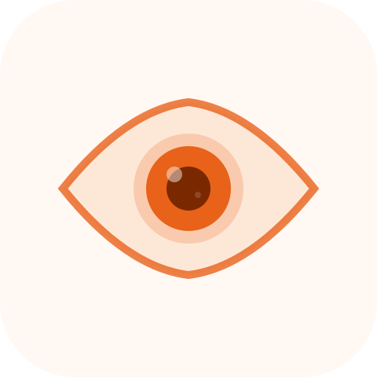

Watchman
대기 중
⭐
0
00:00
홈
📷
카메라가 꺼져 있어요
카메라 연결 중...
카메라 켜기
스터디 시작하기
카메라를 켜면 스터디를 시작할 수 있어요
보유 포인트
⭐
0
P
이번 세션 +0P
다음 포인트까지
집중 중일 때 적립돼요
⭐
30초 집중 시
+1P
🔥
5분 연속 집중
+5P 보너스
💎
10분 연속 집중
+10P 보너스
스터디 시간
00:00
카메라를 켜고 시작해보세요
이번 세션
집중 시간
00:00
딴짓 시간
00:00
집중률
0%